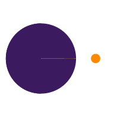

<ngx-spinner bdColor="rgb(255 255 255 / 80%)" template=""></ngx-spinner>
<div class="root-page" *ngIf="isLogged">
    <div class="root-page-header">
        <button mat-icon-button matTooltip="Menú" class="root-page-header-btn-menu" (click)="drawer.toggle()">
            <mat-icon>menu</mat-icon>
        </button>
        <div class="root-page-header-logo-container">
            
        </div>
        <span class="root-page-header-title">Ranage | {{ rootTitle }}</span>
        <span class="root-page-header-space"></span>
        <span class="root-page-header-username">{{ userName }}</span>
        <button mat-icon-button matTooltip="Salir" class="root-page-header-btn-action" (click)="onExit()">
            <mat-icon>logout</mat-icon>
        </button>
    </div>
    <mat-drawer-container class="root-page-body">
        <mat-drawer #drawer mode="side" opened class="root-page-body-menu">
            <div class="root-page-body-menu-container">
                <mat-tree [dataSource]="dataMenu" [treeControl]="treeControl" class="root-page-body-menu-tree">
                    <mat-tree-node *matTreeNodeDef="let node" (click)="actionGoToPage(node)" [ngClass]="{'root-page-body-menu-item-menu-selected': node.IsSelected}">
                        <mat-icon class="root-page-body-menu-item-menu-icon" [ngStyle]="{'background-color': node.Color}">{{node.Icon}}</mat-icon>
                        {{node.Name}}
                    </mat-tree-node>
                    <mat-nested-tree-node *matTreeNodeDef="let node; when: hasChild">
                        <div class="mat-tree-node">
                            <mat-icon class="root-page-body-menu-item-menu-icon" [ngStyle]="{'background-color': node.Color}">{{node.Icon}}</mat-icon>
                            {{node.Name}}
                        </div>
                        <div role="group">
                            <ng-container matTreeNodeOutlet></ng-container>
                        </div>
                    </mat-nested-tree-node>
                </mat-tree>
            </div>
        </mat-drawer>
        <mat-drawer-content class="root-page-body-main">
            <router-outlet></router-outlet>
        </mat-drawer-content>
    </mat-drawer-container>
</div>
<div class="root-page" *ngIf="!isLogged">
    <router-outlet></router-outlet>
</div>